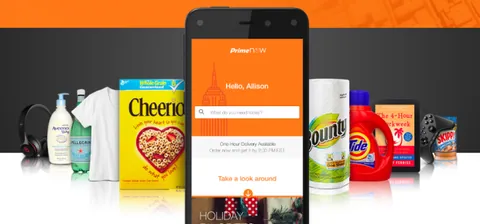

Prime Now
How local stores with no online business sold through Prime Now, which delivered within one or two hours.


- Role
- Founding product manager of the local-store and seller platform
- Reach
- Partner stores in 7 countries by 2017
- Result
- Out of stock from 25% to 5%; 40 hours a week of manual work automated
I was the founding product manager of Prime Now’s platform for local stores and sellers. I sat in the first stores, took the spreadsheets they had, then learned to code and automated the rest. Out of stock at partner stores fell from 25% to 5%.
What I decided
Took whatever data each store had
The stores had never sold online, so I asked for what they had: “Send me spreadsheets, whatever you have.” For six months I uploaded their files by hand, starting at 4 AM, and updated them four times a day.
Synced every store’s stock to the app daily
I built a system that matched each store’s items to Amazon’s catalog, produced forecasts and uploaded its stock every day. Out of stock at partner stores fell from 25% to 5%.
Measured each new country on its growth
As Prime Now opened in new countries, each was measured on revenue, a goal that did not reward growing two-hour delivery. I proposed measuring each country on its percentage growth, and leadership adopted it.
How it worked
Delivery within the hour needed the item on the shelf
Prime Now began selling goods from local stores on 21 May 2015, starting in Manhattan. Until then it had sold only Amazon’s own stock. The stores had never sold online: no online catalog, no product feed and no way to send their stock to an app. Delivery within the hour worked only if the item the app showed was on the shelf when the order came in.

Take each store’s spreadsheet as it came
Each store sent its items in whatever file it kept. Packaged goods carried barcodes, loose produce carried four- or five-digit codes for its kind, and everything else carried the store’s own item codes. PCC, a Seattle grocer, put 10,000 or more items into the app.
Match each item to Amazon’s catalog
The system built each store’s catalog by matching its items to Amazon’s products by algorithm, which was very hard. Loose produce and a store’s own brands had no record to find, so they needed new ones. In Madrid in September 2016, partner stores brought 7,000 products, 5,000 of them new to Prime Now.
A forecast for every store
The system produced forecasts for each store. Lavinia, a Paris wine merchant, said Amazon supplied it with forecasts based on Amazon’s experience in other European countries.
Upload every store’s stock every day
Each day the system uploaded every store’s stock to the app automatically. In a 2008 study of 37 stores, 65% of the inventory records were inaccurate. Each daily upload closed the gap that had opened between the app and the shelf. The system automated 40 hours of manual work a week.
I also designed the payment and fulfillment application programming interfaces (APIs) that independent sellers used, carrying millions of transactions.

Out of stock at partner stores
What came next
In 2021 Amazon retired the Prime Now app and moved fast delivery into its main app. Partner stores such as Bartell’s, Morrisons and Monoprix moved with it. In December 2025 Amazon began testing a successor, Amazon Now, with delivery in about 30 minutes.